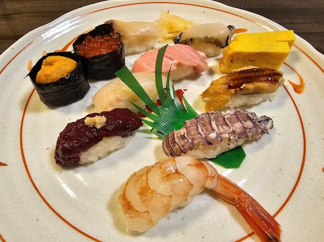
| 営業時間 | 月・火・水・木・金・土・日 11:00〜13:30, 17:00〜20:30 |
|---|---|
| 定休日 | なし(要最終確認) |
| 住所 | 宮城県石巻市鋳銭場８−５ |
| 予約 | 可 — ☎ 0225-96-8502 ／ 公式サイト |
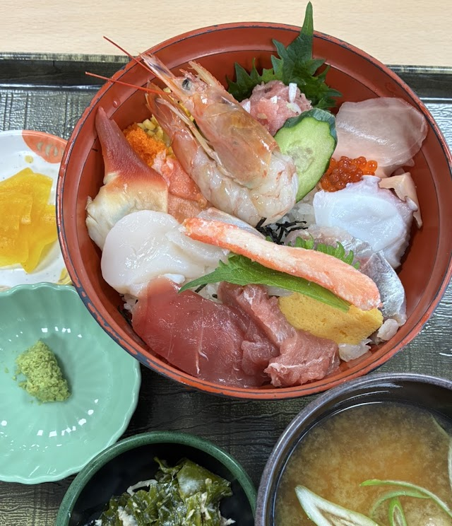
| 営業時間 | 平日・土6:30〜14:00、日9:30〜14:00 |
|---|---|
| 定休日 | 無休(年末年始休あり) |
| 住所 | 宮城県石巻市魚町２丁目１２−３ 水産総合振興センタ １階 |
| 予約 | 可 — ☎ 0225-96-2364 ／ 公式サイト |
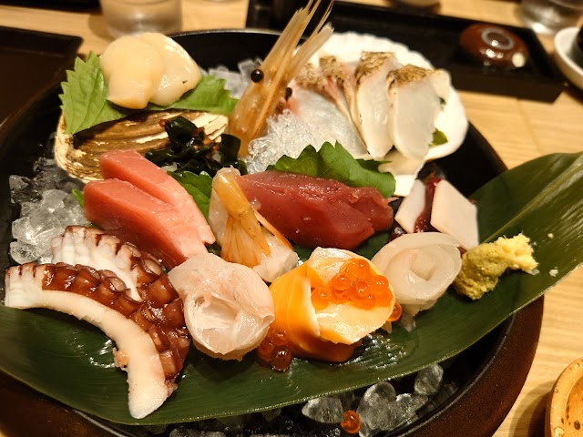
| 営業時間 | 火・水・木・金・土・日 11:30〜15:00, 17:00〜21:30 |
|---|---|
| 定休日 | 月曜 |
| 住所 | 宮城県石巻市中央１丁目１５−８ |
| 予約 | 可 — ☎ 0225-22-2851 ／ 公式サイト |
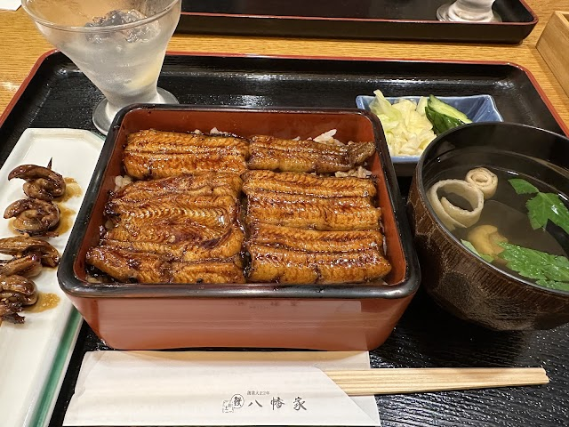
| 営業時間 | 月・木・金・土・日 12:00〜14:00, 17:00〜20:00 ／ 火 12:00〜14:00 |
|---|---|
| 定休日 | 水曜 |
| 住所 | 宮城県石巻市中央２丁目８−２３ |
| 予約 | 可 — ☎ 0225-22-0138 ／ 公式サイト |
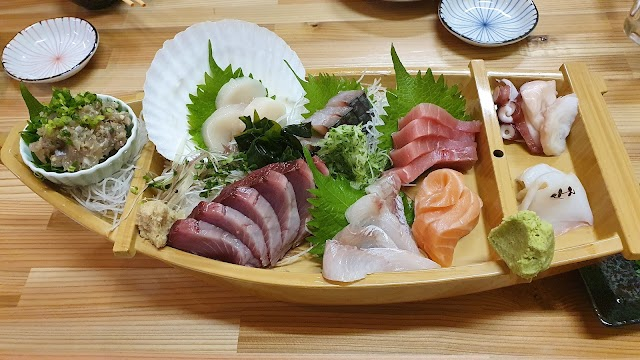
| 営業時間 | 月・火・水・木・金・土 11:30〜14:00, 17:00〜21:00 |
|---|---|
| 定休日 | 日曜 |
| 住所 | 宮城県石巻市千石町１−３ |
| 予約 | 可 — ☎ 0225-22-1258 ／ 公式サイト |
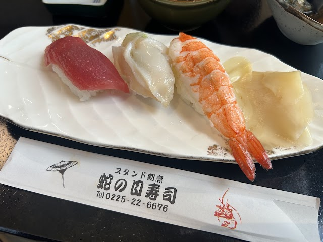
| 営業時間 | 火・水・木・金・土・日 11:00〜14:00, 17:00〜22:00 |
|---|---|
| 定休日 | 月曜 |
| 住所 | 宮城県石巻市中央１丁目６−７ |
| 予約 | 可 — ☎ 0225-22-6676 ／ 公式サイト |
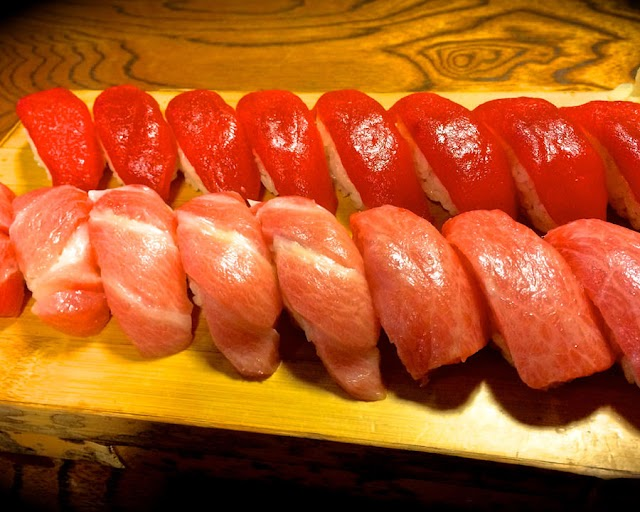
| 営業時間 | 月・火・水・木・金・土・日 11:00〜13:30, 17:00〜20:00 |
|---|---|
| 定休日 | なし(要最終確認) |
| 住所 | 宮城県石巻市門脇元浦屋敷７０−２ |
| 予約 | 可 — ☎ 0225-22-4414 ／ 公式サイト |
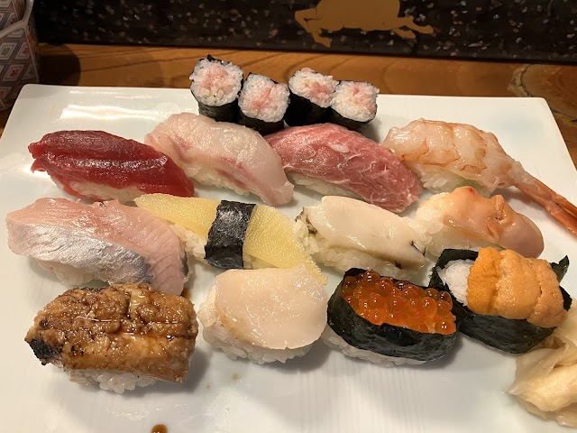
| 営業時間 | 月・火・水・金・土・日 11:00〜14:00, 17:00〜21:00 |
|---|---|
| 定休日 | 木曜 |
| 住所 | 宮城県石巻市清水町２丁目２−３ |
| 予約 | 可 — ☎ 0225-93-4777 |
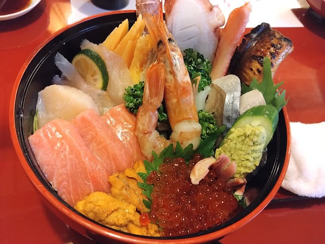
| 営業時間 | 月・火・水・木・金・土・日 11:00〜22:00 |
|---|---|
| 定休日 | なし(要最終確認) |
| 住所 | 宮城県石巻市蛇田中埣１８−９ |
| 予約 | 可 — ☎ 0225-22-6651 |
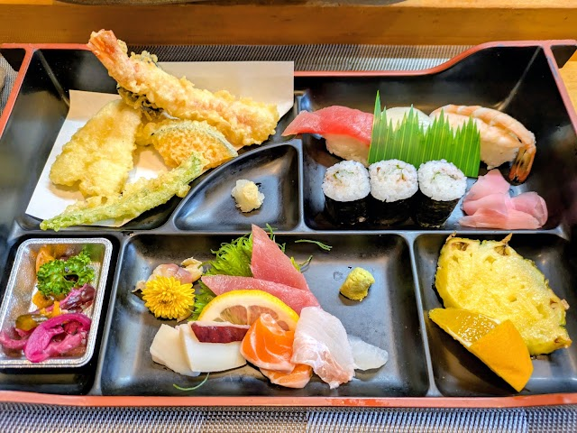
| 営業時間 | 月・火・金・土・日 11:15〜14:45, 17:00〜20:00 |
|---|---|
| 定休日 | 水・木曜 |
| 住所 | 宮城県石巻市万石町８−７ |
| 予約 | 可 — ☎ 0225-24-0218 |
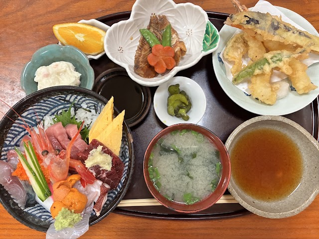
| 営業時間 | 水・木・金・土・日 11:30〜13:30, 17:00〜21:00 |
|---|---|
| 定休日 | 月・火曜 |
| 住所 | 宮城県石巻市門脇一番谷地６４−４７ |
| 予約 | 可 — ☎ 0225-22-3211 ／ 公式サイト |
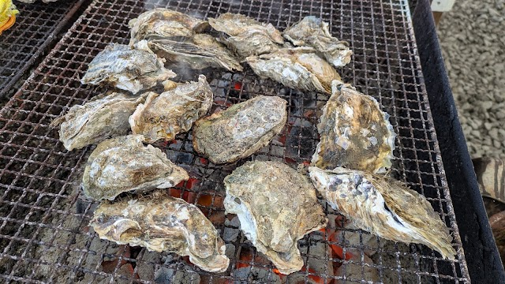
| 営業時間 | 土・日 11:00〜17:00 |
|---|---|
| 定休日 | 月・火・水・木・金曜 |
| 住所 | 宮城県石巻市渡波祝田７５−５ |
| 予約 | 要確認 — ☎ 0225-24-5640 ／ 公式サイト |
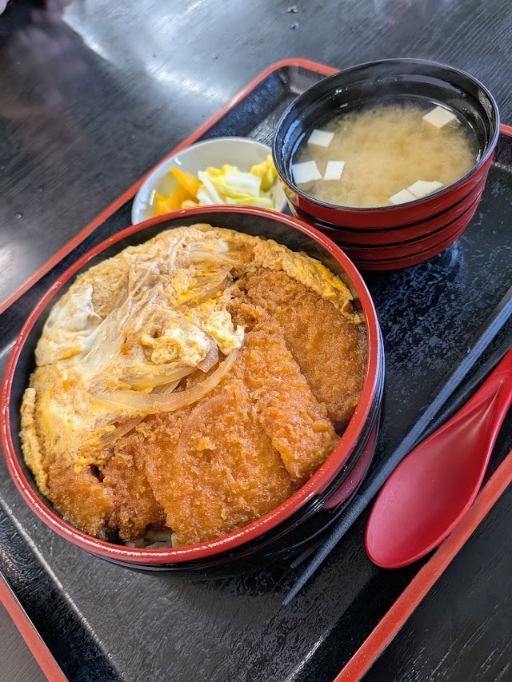
| 営業時間 | 火・水・木・金・土・日 11:30〜13:50 |
|---|---|
| 定休日 | 月曜 |
| 住所 | 宮城県石巻市渡波町１丁目８−１０ |
| 予約 | 要確認 — ☎ 0225-24-0851 |
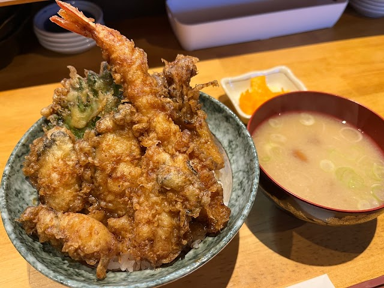
| 営業時間 | 月・火・水・木・金・土 11:30〜14:30, 17:30〜22:00 |
|---|---|
| 定休日 | 日曜 |
| 住所 | 宮城県石巻市鋳銭場３−６ 大橋ビル 2F |
| 予約 | 可 — ☎ 0225-25-5612 ／ 公式サイト |
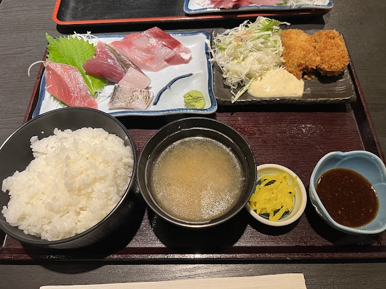
| 営業時間 | 月・火・水・木・金 11:00〜14:00, 17:00〜22:00 ／ 土 17:00〜22:00 |
|---|---|
| 定休日 | 日曜 |
| 住所 | 宮城県石巻市中央２丁目１−２３ |
| 予約 | 可 — ☎ 0225-25-5996 ／ 公式サイト |
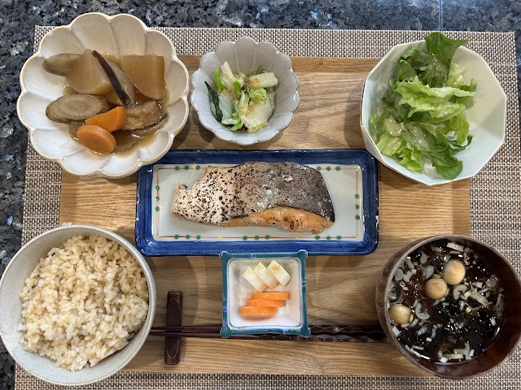
| 営業時間 | 水・木・金・土・日 11:00〜15:00 |
|---|---|
| 定休日 | 月・火曜 |
| 住所 | 宮城県石巻市中央２丁目７−３１ |
| 予約 | 可 — ☎ 070-4225-0884 |
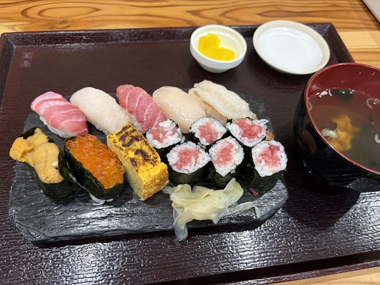
| 営業時間 | 月・水・木・金・土・日 11:00〜15:00 |
|---|---|
| 定休日 | 火曜 |
| 住所 | 宮城県石巻市雄勝町下雄勝２丁目5−番地 |
| 予約 | 可 — ☎ 080-5575-9976 ／ 公式サイト |
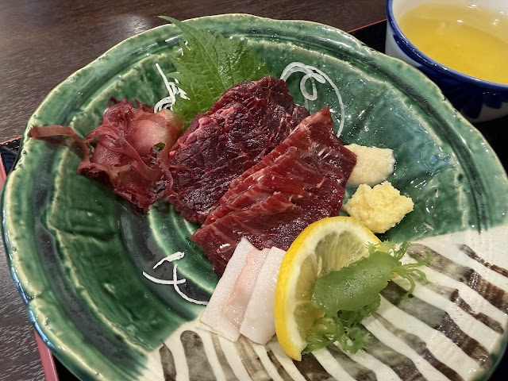
| 営業時間 | 月・火・木・金・土・日 11:00〜16:00 |
|---|---|
| 定休日 | 水曜 |
| 住所 | 宮城県石巻市鮎川浜南43−１ Cottu |
| 予約 | 可 — ☎ 0225-25-5422 ／ 公式サイト |
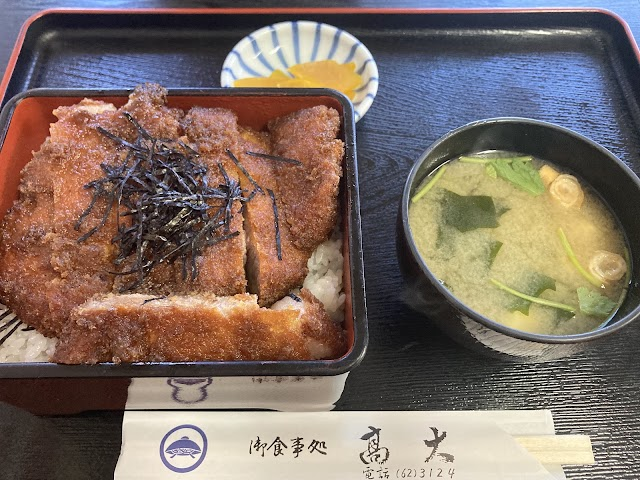
| 営業時間 | 月・火・木・金・土・日 11:00〜14:00 |
|---|---|
| 定休日 | 水曜 |
| 住所 | 宮城県石巻市相野谷飯野川町２０５−７ |
| 予約 | 可 — ☎ 0225-62-3124 |
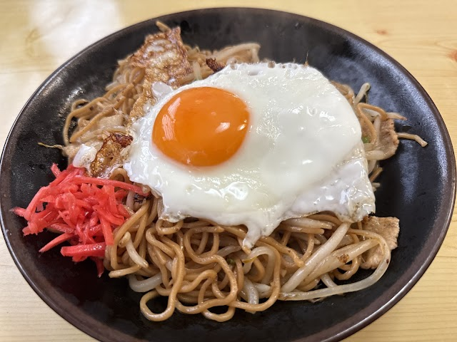
| 営業時間 | 月・火・水・木・金・土・日 11:30〜17:00 |
|---|---|
| 定休日 | なし(要最終確認) |
| 住所 | 宮城県石巻市立町２丁目６−１７ |
| 予約 | 要確認 — ☎ 0225-93-4645 |
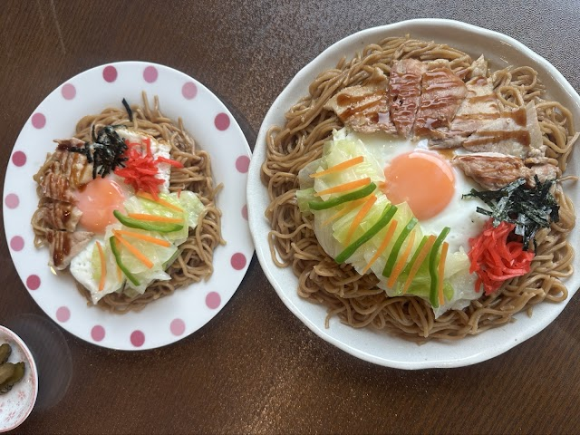
| 営業時間 | 月・火・水・金・土・日 11:00〜16:00 |
|---|---|
| 定休日 | 木曜 |
| 住所 | 宮城県石巻市のぞみ野５丁目１７−１４ |
| 予約 | 要確認 — ☎ 0225-93-9888 ／ 公式サイト |
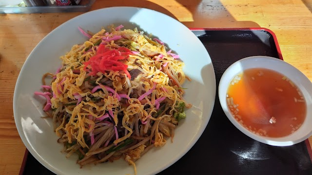
| 営業時間 | 月・水・木・金・土・日 11:00〜14:30, 17:00〜19:00 |
|---|---|
| 定休日 | 火曜 |
| 住所 | 宮城県石巻市双葉町６−２３ |
| 予約 | 要確認 — ☎ 0225-22-4565 |
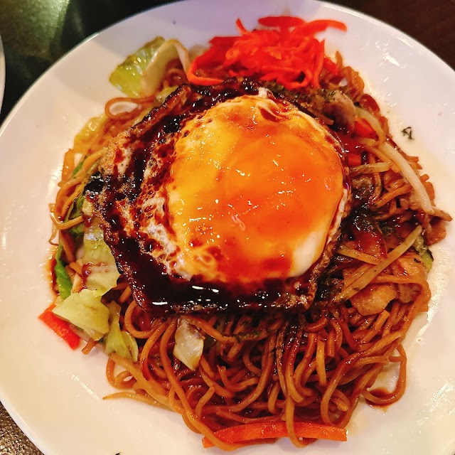
| 営業時間 | 月・火・水・木・金・土 19:00〜0:00 ／ 日 0:00〜12:00 |
|---|---|
| 定休日 | なし(要最終確認) |
| 住所 | 宮城県石巻市立町１丁目１−３ |
| 予約 | 要確認 — ☎ 090-6256-2988 |
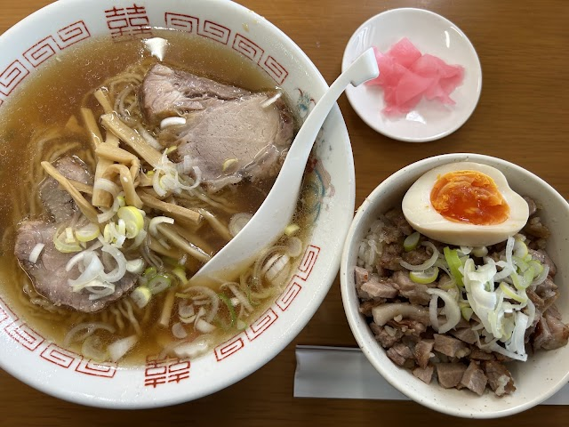
| 営業時間 | 月・火・木・金 11:00〜15:00 ／ 土・日 11:00〜17:00 |
|---|---|
| 定休日 | 水曜 |
| 住所 | 宮城県石巻市鹿又天王前１７−１７ |
| 予約 | 要確認 — ☎ 0225-75-3031 |
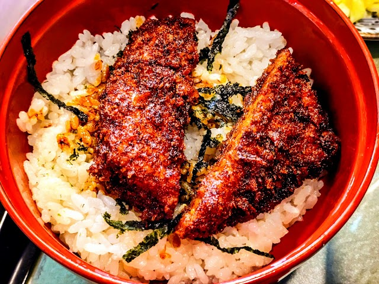
| 営業時間 | 火・水・木・金・土・日 11:00〜14:00, 17:00〜19:00 |
|---|---|
| 定休日 | 月曜 |
| 住所 | 宮城県石巻市相野谷飯野川町１７１ |
| 予約 | 要確認 |
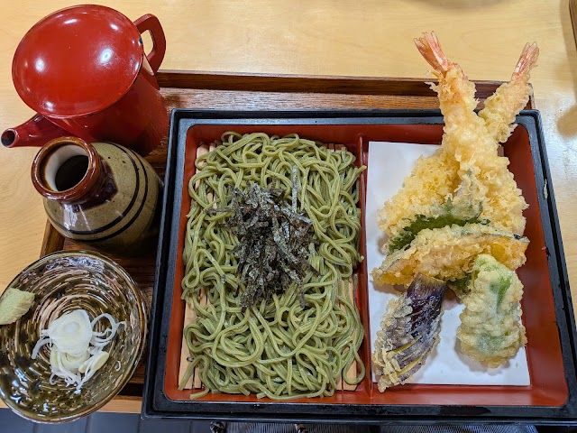
| 営業時間 | 月・火・木・金・土・日 11:00〜15:00 |
|---|---|
| 定休日 | 水曜 |
| 住所 | 宮城県石巻市中央２丁目１−１３ |
| 予約 | 要確認 — ☎ 0225-22-1660 |
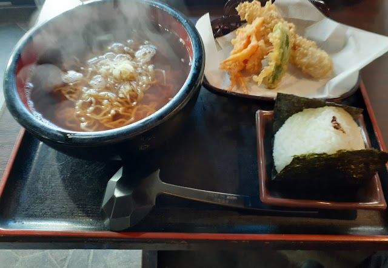
| 営業時間 | 月・火・水・木・金 11:00〜14:30 |
|---|---|
| 定休日 | 土・日曜 |
| 住所 | 宮城県石巻市穀町６−１９ |
| 予約 | 可 — ☎ 0225-95-0468 |
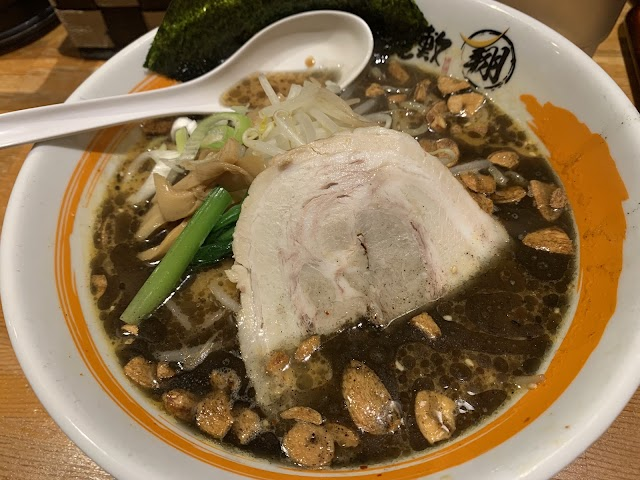
| 営業時間 | 月・火・水・木・金・土・日 11:30〜14:30, 17:30〜21:00 |
|---|---|
| 定休日 | なし(要最終確認) |
| 住所 | 宮城県石巻市鹿妻南３丁目７−３６ |
| 予約 | 要確認 — ☎ 0225-98-9899 ／ 公式サイト |
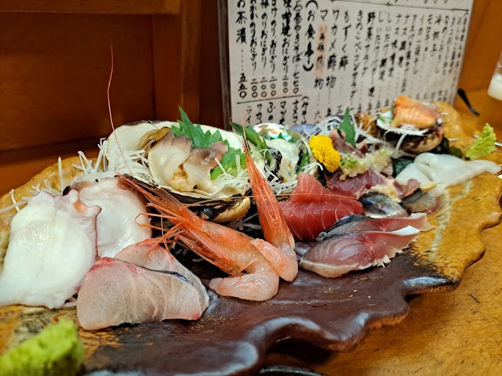
| 営業時間 | 月・火・水・木・金・土 17:00〜21:30 |
|---|---|
| 定休日 | 日曜 |
| 住所 | 宮城県石巻市立町２丁目３−１０ |
| 予約 | 可 — ☎ 0225-93-3100 ／ 公式サイト |
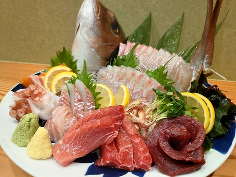
| 営業時間 | 月・火・水・木・金・土 16:00〜0:00 |
|---|---|
| 定休日 | 日曜 |
| 住所 | 宮城県石巻市立町２丁目７−８ 富久屋ビル 2階 |
| 予約 | 可 — ☎ 050-8888-2000 ／ 公式サイト |
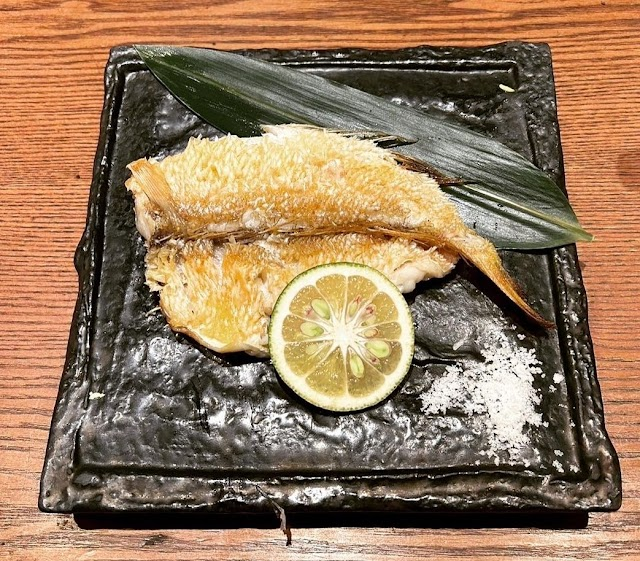
| 営業時間 | 月・火・水・木 17:00〜23:30 ／ 金・土 17:00〜0:00 ／ 日 17:00〜23:00 |
|---|---|
| 定休日 | なし(要最終確認) |
| 住所 | 宮城県石巻市立町１丁目２−５ |
| 予約 | 可 — ☎ 0225-93-2603 ／ 公式サイト |
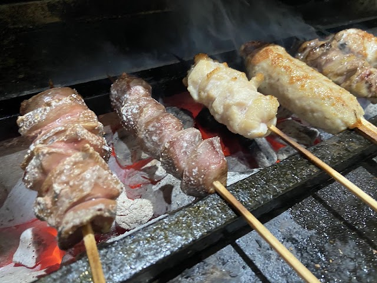
| 営業時間 | 火・水・木・金 17:00〜23:00 ／ 土 16:00〜23:00 ／ 日 13:00〜23:00 |
|---|---|
| 定休日 | 月曜 |
| 住所 | 宮城県石巻市中央２丁目３−１２ 石巻やきとりタワ 1F |
| 予約 | 可 — ☎ 0225-98-8511 ／ 公式サイト |
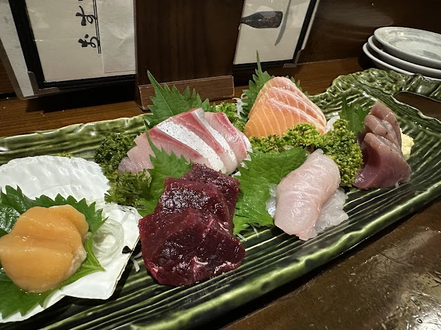
| 営業時間 | 月・火・水・木・金・土・日 17:00〜0:00 |
|---|---|
| 定休日 | なし(要最終確認) |
| 住所 | 宮城県石巻市立町２丁目５−４１ |
| 予約 | 可 — ☎ 0225-23-5821 ／ 公式サイト |
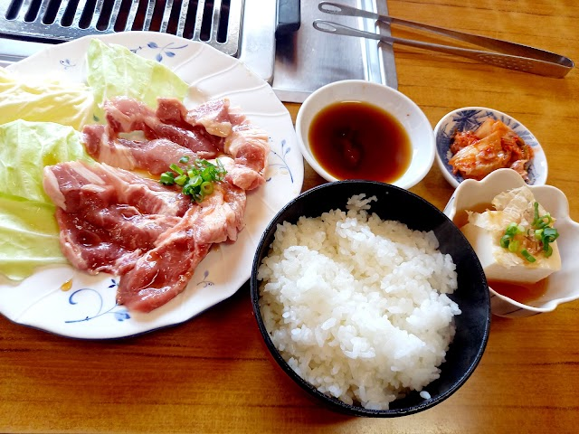
| 営業時間 | 月・火・水・木・金・土・日 11:00〜14:00, 17:00〜20:30 |
|---|---|
| 定休日 | なし(要最終確認) |
| 住所 | 宮城県石巻市前谷地黒沢前８４−１ |
| 予約 | 可 — ☎ 0225-72-3888 ／ 公式サイト |
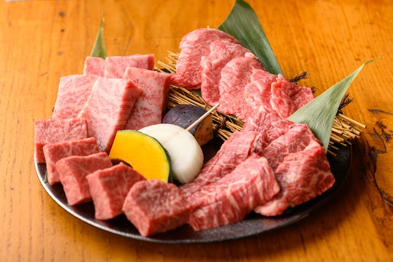
| 営業時間 | 月・火・水・木・金・土・日 17:00〜23:00 |
|---|---|
| 定休日 | なし(要最終確認) |
| 住所 | 宮城県石巻市鋳銭場４−８ |
| 予約 | 可 — ☎ 0225-22-2911 ／ 公式サイト |
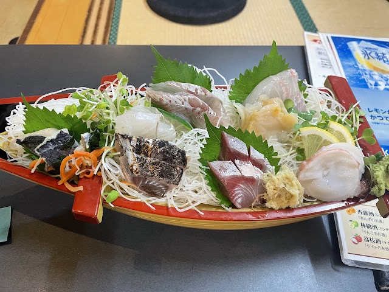
| 営業時間 | 月・火・水・木・金・土 17:00〜22:00 |
|---|---|
| 定休日 | 日曜 |
| 住所 | 宮城県石巻市千石町１−３ |
| 予約 | 可 — ☎ 0225-94-0373 |
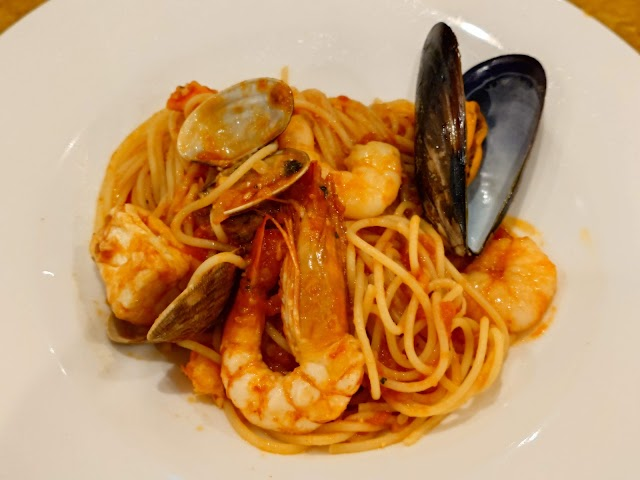
| 営業時間 | 月・火 10:00〜17:00 ／ 水・木・金・土・日 10:00〜20:30 |
|---|---|
| 定休日 | なし(要最終確認) |
| 住所 | 宮城県石巻市千石町２−１０ 1F 石巻グランドホテル内1F |
| 予約 | 可 — ☎ 0225-93-8111 ／ 公式サイト |
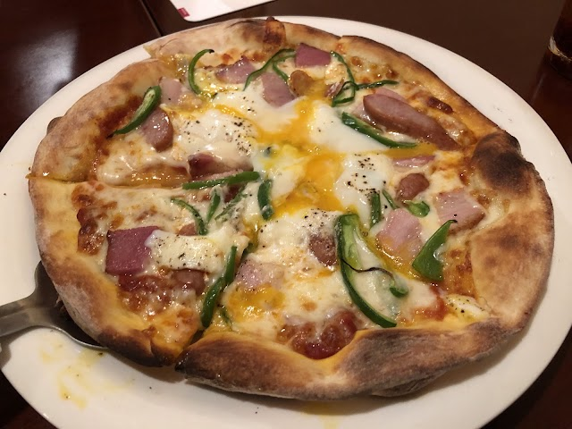
| 営業時間 | 火・水・木・金・土・日 17:30〜22:00 |
|---|---|
| 定休日 | 月曜 |
| 住所 | 宮城県石巻市立町２丁目５−１ |
| 予約 | 可 — ☎ 0225-94-4060 ／ 公式サイト |
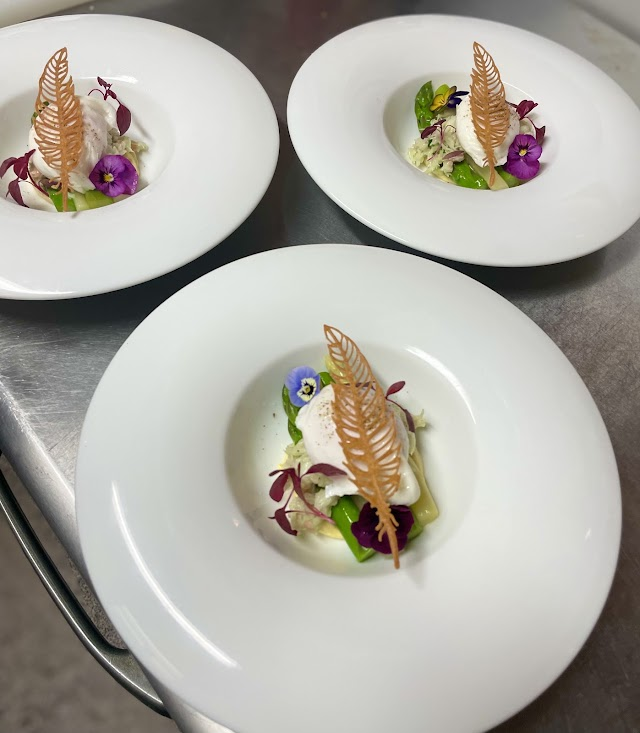
| 営業時間 | 火・水・木・金・土 11:30〜14:30, 17:30〜21:00 ／ 日 11:30〜14:30 |
|---|---|
| 定休日 | 月曜 |
| 住所 | 宮城県石巻市中央２丁目７−１０ |
| 予約 | 可 — ☎ 080-9258-9771 ／ 公式サイト |
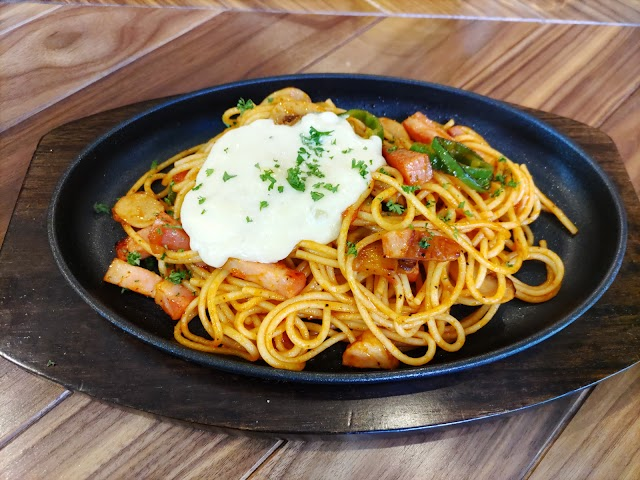
| 営業時間 | 月・水・木・土 9:30〜19:00 ／ 日 9:30〜17:00 |
|---|---|
| 定休日 | 火・金曜 |
| 住所 | 宮城県石巻市中央２丁目２−１０ |
| 予約 | 要確認 — ☎ 0225-90-9988 ／ 公式サイト |
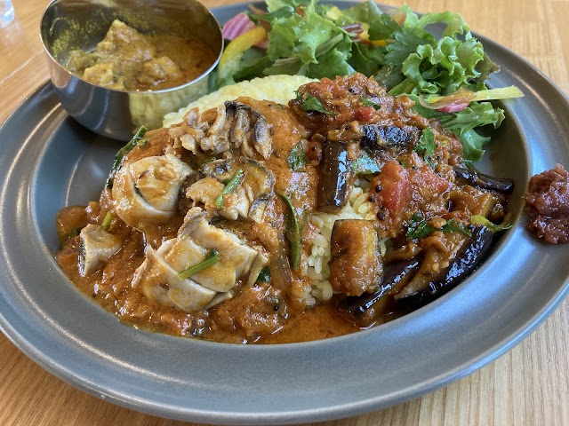
| 営業時間 | 水・木・金・土 11:00〜15:00 |
|---|---|
| 定休日 | 月・火・日曜 |
| 住所 | 宮城県石巻市蛇田上中埣９４ |
| 予約 | 可 — ☎ 070-4435-8070 ／ 公式サイト |
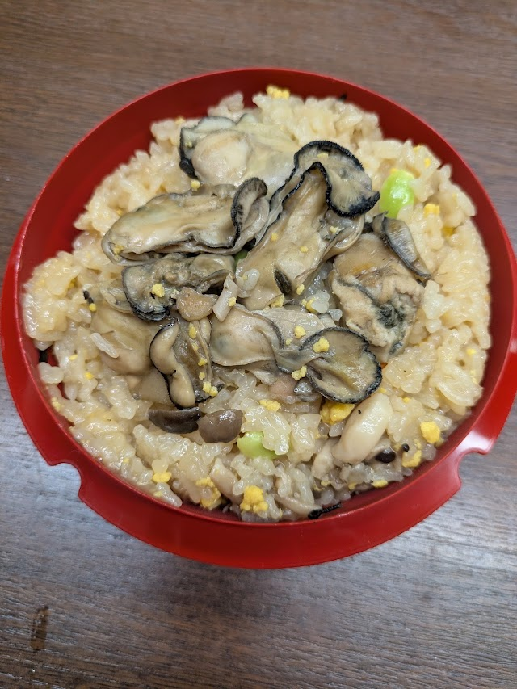
| 営業時間 | 火・水・木・金・土 11:00〜14:00 ／ 日 11:00〜14:00, 17:00〜19:30 |
|---|---|
| 定休日 | 月曜 |
| 住所 | 宮城県石巻市中央２丁目５−１０ |
| 予約 | 要確認 — ☎ 0225-93-4680 |
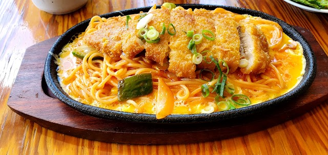
| 営業時間 | 水・木・金・土・日 11:00〜20:30 |
|---|---|
| 定休日 | 月・火曜 |
| 住所 | 宮城県石巻市中里２丁目６−９ |
| 予約 | 可 — ☎ 0225-93-4001 ／ 公式サイト |
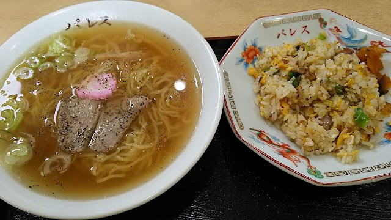
| 営業時間 | 月・火・水・木・金・土・日 11:00〜18:00 |
|---|---|
| 定休日 | なし(要最終確認) |
| 住所 | 宮城県石巻市住吉町１丁目６−８ |
| 予約 | 要確認 — ☎ 0225-22-1937 |
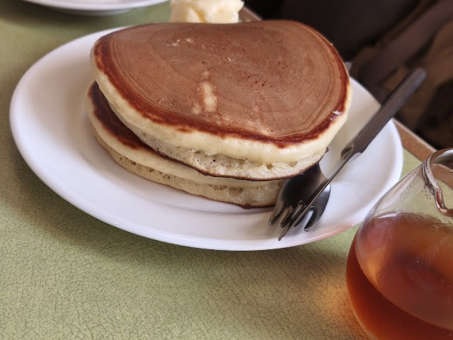
| 営業時間 | 月・木・金・土・日 10:00〜17:30 |
|---|---|
| 定休日 | 火・水曜 |
| 住所 | 宮城県石巻市中央２丁目２−１３ |
| 予約 | 要確認 — ☎ 0225-23-5065 ／ 公式サイト |
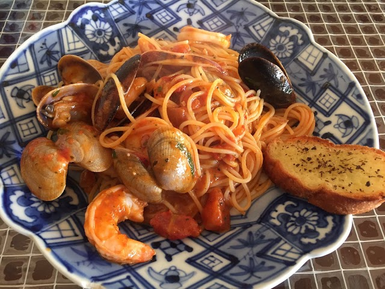
| 営業時間 | 月・火・水・木・金・土・日 10:00〜17:00 |
|---|---|
| 定休日 | なし(要最終確認) |
| 住所 | 宮城県石巻市中央２丁目３−３ |
| 予約 | 可 — ☎ 080-1668-5727 |
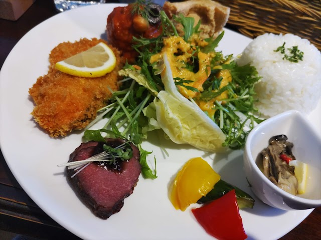
| 営業時間 | 水・木・金 9:00〜17:00 ／ 土・日 11:00〜16:00 |
|---|---|
| 定休日 | 月・火曜 |
| 住所 | 宮城県石巻市立町２丁目７−２６ |
| 予約 | 可 — ☎ 070-1141-5238 ／ 公式サイト |
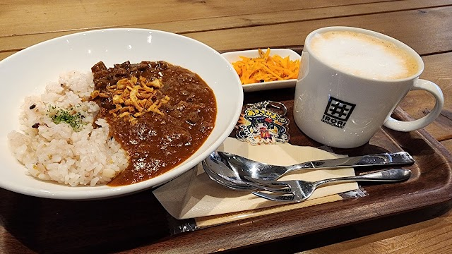
| 営業時間 | 月・火・水・木・金・土・日 10:00〜19:00 |
|---|---|
| 定休日 | なし(要最終確認) |
| 住所 | 宮城県石巻市中央２丁目１０−２ 新田屋ビル 1F |
| 予約 | 要確認 — ☎ 0225-25-4953 ／ 公式サイト |
| 営業時間 | 月・火・水・木・金・土 9:00〜17:00 |
|---|---|
| 定休日 | 日曜 |
| 住所 | 宮城県石巻市中央２丁目４−２３ ディオヒルズ石巻マークス 内 |
| 予約 | 要確認 — 公式サイト |
| 営業時間 | 火 17:00〜21:00 ／ 水・木・金・土 11:30〜13:30, 17:00〜21:00 |
|---|---|
| 定休日 | 月・日曜 |
| 住所 | 宮城県石巻市門脇町１丁目３−２１ |
| 予約 | 可 — ☎ 0225-25-7603 ／ 公式サイト |
| 営業時間 | 月・木・金・土・日 9:30〜19:00 |
|---|---|
| 定休日 | 火・水曜 |
| 住所 | 宮城県石巻市大街道北１丁目１−４５ |
| 予約 | 要確認 — ☎ 0225-98-6033 ／ 公式サイト |
| 営業時間 | 火・水・木・金・土 10:00〜17:00 |
|---|---|
| 定休日 | 月・日曜 |
| 住所 | 宮城県石巻市中央２丁目１１−３５ |
| 予約 | 要確認 — ☎ 0225-24-8220 ／ 公式サイト |
| 営業時間 | 月・金・土・日 11:00〜15:00 |
|---|---|
| 定休日 | 火・水・木曜 |
| 住所 | 宮城県石巻市北上町十三浜吉浜４０３−１６ |
| 予約 | 可 — ☎ 0225-24-6242 ／ 公式サイト |
本ガイドは個人利用目的で作成。掲載情報は2026年8月時点の調査に基づく。写真出典: Google Maps投稿写真(©各投稿者/Google)。